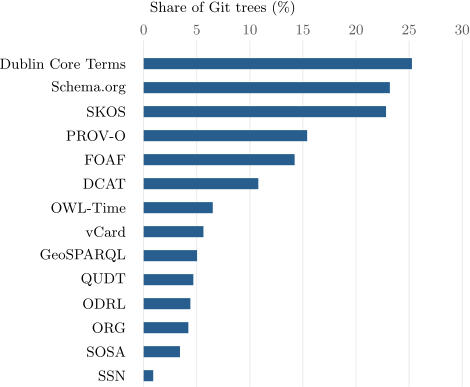
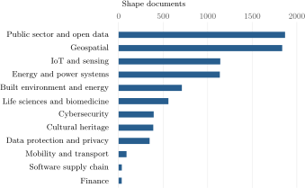
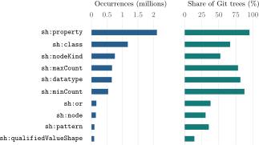
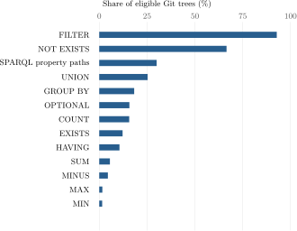

Section 1 covers dataset coverage, shape distribution, SHACL and ontology usage, constraint consistency, and usage contexts.
Sections 2 and 3 provide occurrence counts and Git tree prevalence for SHACL shapes, targets, property paths, shape characteristics, and Core constraint parameters.
Section 4 analyzes the use of SPARQL-based constraints and constraint components.
SHACL en Forme presents statistics on how the Shapes Constraint Language (SHACL) is used in public GitHub repositories. It is an independent research resource and is not endorsed by the W3C.
The analysis covers SHACL shapes, targets, property paths, Core constraint parameters, and SHACL-SPARQL. It provides occurrence counts and Git tree prevalence using data collected from verified GitHub repositories, excluding forks. The dataset reflects the state of the verified GitHub repositories as of 11 October 2026.
Definitions, syntax rules, and validation procedures are available in the SHACL 1.0 Recommendation.
A Git tree represents a snapshot of repository contents. Multiple GitHub repositories may reference the same tree. The analysis uses distinct Git trees to avoid counting identical repository snapshots more than once.
Repositories were verified based on SHACL shape declarations, Core target or constraint predicates, or structurally attached SHACL-SPARQL constraints in parsed RDF graphs. After excluding forks and Git trees without extracted SHACL shape documents, the final dataset contains 3,675 repositories representing 3,657 distinct Git trees.
Among 550,508 files identified for RDF processing, 548,135 were successfully parsed.
A file is counted as a SHACL shape document if it contains at least one SHACL shape. Files containing only annotations or validation reports are not counted.
| Measurement | Count |
|---|---|
| Analyzed Git trees | 3,657 |
| Shape documents | 50,625 |
| Parsed RDF files | 548,135 |
The analysis identified 1,183,518 distinct shapes typed as sh:NodeShape or sh:PropertyShape.
| Share of trees | Trees | Distinct shapes | Share of distinct shapes |
|---|---|---|---|
| Top 1% | 37 | 690,425 | 58.34% |
| Top 5% | 183 | 1,037,474 | 87.66% |
| Top 10% | 366 | 1,104,828 | 93.35% |
SHACL shapes are highly concentrated in a small number of Git trees, with the top 1% containing 58.34% of all shapes.
The analysis compares class and property IRIs referenced by SHACL shapes with ontology declarations in the same Git tree. A match requires that the referenced IRI is declared in that tree as an ontology term explicitly typed as a class or property.
| Result | Git trees |
|---|---|
| Both SHACL shapes and ontology terms | 2,805 |
| At least one matching ontology term | 2,304 |
| No matching ontology terms detected | 501 |
The analysis counts Git trees containing SHACL references to terms from public RDF vocabularies through constraints, targets, and property paths. Both simple and complex property paths are considered.

The analysis compares ontology restrictions with SHACL constraints on property cardinality and value types. Comparisons use shared property IRIs and, for cardinality and OWL value restrictions, matching class IRIs.
Property range comparisons covered 1,708 Git trees. In 90,296 distinct tree–property pairs, rdfs:range and sh:class or sh:datatype referenced identical IRIs.
OWL value restrictions were compared with sh:class and sh:datatype in 323 Git trees, using matching class IRIs. Identical value type IRIs were found in 40,758 owl:allValuesFrom comparisons and 6,852 owl:someValuesFrom comparisons.
Cardinality comparisons covered 401 Git trees, using OWL cardinality restrictions and sh:minCount or sh:maxCount. At the tree–property level, identical minimum bounds were found in 6,853 pairs and identical maximum bounds in 24,460 pairs.
The analysis checks for conflicting combinations of SHACL Core constraints. For example, a DCAT profile requires a foaf:name value to be both an xsd:string literal and a blank node. These requirements cannot be satisfied simultaneously.
Constraints were checked separately for each RDF source document.
| Measurement | Count |
|---|---|
| Git trees with identified conflicts | 86 |
| Distinct document contents with conflicts | 272 |
| Total conflict detections | 3,664 |
The findings are concentrated in a small number of Git trees. Four trees contribute approximately 75% of all detections, largely due to repeated or generated shapes. Some findings also come from test material.
The analysis describes SHACL shape documents through their file organization and references to application-domain vocabularies.
File paths and names contain test or example references in 19,477 documents and generation-related terms in 338 documents. Ontology and application profile indicators were found in 1,431 documents. These categories may overlap.
Application domains were identified using vocabulary references in SHACL constraints and property paths. The classification assigned 16,227 shape documents to at least one of the 12 application domains.
Figure 2 shows the number of documents associated with each domain. Documents may be assigned to multiple domains.

The analysis identified 1,183,518 shapes explicitly typed as sh:NodeShape or sh:PropertyShape. Shape IRIs are deduplicated per Git tree, and blank nodes are counted per file. The 632 resources typed as both sh:NodeShape and sh:PropertyShape are counted only once in the total.
Untyped property shapes were identified in 3,225 Git trees. Most occur under sh:property, without a sh:PropertyShape type declaration.
The table reports occurrence counts and Git tree prevalence for the four explicit target predicates. Implicit class targets are not counted separately.
| Parameter | Unique Git trees | Tree prevalence | Occurrences |
|---|---|---|---|
sh:targetNode |
366 / 3,657 | 10.01% | 29,889 |
sh:targetClass |
3,374 / 3,657 | 92.26% | 838,272 |
sh:targetSubjectsOf |
805 / 3,657 | 22.01% | 27,187 |
sh:targetObjectsOf |
570 / 3,657 | 15.59% | 13,725 |
The analysis identified 424,580 node shapes.
The analysis identified 759,570 property shapes.
The following table shows occurrence counts and Git tree prevalence for seven SHACL property path forms. Occurrences include nested path forms, so a single sh:path declaration may contribute to multiple counts.
| Path form | Unique Git trees | Tree prevalence | Occurrences |
|---|---|---|---|
PredicatePath |
3,508 / 3,657 | 95.93% | 2,432,119 |
SequencePath |
538 / 3,657 | 14.71% | 117,295 |
AlternativePath |
385 / 3,657 | 10.53% | 9,813 |
InversePath |
568 / 3,657 | 15.53% | 15,869 |
ZeroOrMorePath |
275 / 3,657 | 7.52% | 9,096 |
OneOrMorePath |
211 / 3,657 | 5.77% | 571 |
ZeroOrOnePath |
93 / 3,657 | 2.54% | 169 |
The analysis counts these properties on shape subjects in the extracted Git trees, including resources that are not explicitly typed as sh:NodeShape or sh:PropertyShape.
| Property | Git trees | Tree prevalence |
|---|---|---|
sh:message |
2,135 | 58.38% |
sh:name |
1,210 | 33.09% |
sh:description |
1,069 | 29.23% |
sh:severity |
1,048 | 28.66% |
sh:order |
436 | 11.92% |
sh:deactivated |
239 | 6.54% |
sh:group |
166 | 4.54% |
sh:defaultValue |
144 | 3.94% |
sh:message is the most widespread of these properties. For severity, sh:Violation has the highest occurrence count, but sh:Warning appears in more Git trees. Severity values are counted only when declared, excluding the default sh:Violation.
Deactivation is less common. The value true appears in 216 Git trees, compared with 239 trees containing sh:deactivated declarations of any value.
Names and descriptions are more widespread than ordering, grouping, and default values.
This section presents occurrence counts and Git tree prevalence for SHACL Core constraint parameters across 3,657 analyzed Git trees.
Occurrences count RDF triples containing each constraint parameter as a predicate. Git tree prevalence measures the proportion of analyzed Git trees containing that parameter.

Occurrence counts and Git tree prevalence show different patterns. For example, sh:class has more occurrences than sh:datatype, but sh:datatype is found in more Git trees. The same pattern appears for sh:maxCount and sh:minCount.
| Parameter | Unique Git trees | Tree prevalence | Occurrences |
|---|---|---|---|
sh:class |
2,436 / 3,657 | 66.61% | 1,172,259 |
sh:datatype |
2,989 / 3,657 | 81.73% | 654,821 |
sh:nodeKind |
1,913 / 3,657 | 52.31% | 754,832 |
| Parameter | Unique Git trees | Tree prevalence | Occurrences |
|---|---|---|---|
sh:minCount |
3,206 / 3,657 | 87.67% | 537,481 |
sh:maxCount |
2,862 / 3,657 | 78.26% | 662,881 |
| Parameter | Unique Git trees | Tree prevalence | Occurrences |
|---|---|---|---|
sh:minExclusive |
336 / 3,657 | 9.19% | 5,565 |
sh:minInclusive |
1,122 / 3,657 | 30.68% | 31,455 |
sh:maxExclusive |
170 / 3,657 | 4.65% | 1,570 |
sh:maxInclusive |
917 / 3,657 | 25.08% | 16,102 |
| Parameter | Unique Git trees | Tree prevalence | Occurrences |
|---|---|---|---|
sh:minLength |
668 / 3,657 | 18.27% | 8,794 |
sh:maxLength |
364 / 3,657 | 9.95% | 13,232 |
sh:pattern |
1,295 / 3,657 | 35.41% | 94,905 |
sh:flags |
185 / 3,657 | 5.06% | 19,997 |
sh:languageIn |
273 / 3,657 | 7.47% | 2,957 |
sh:uniqueLang |
382 / 3,657 | 10.45% | 7,520 |
| Parameter | Unique Git trees | Tree prevalence | Occurrences |
|---|---|---|---|
sh:equals |
168 / 3,657 | 4.59% | 9,358 |
sh:disjoint |
199 / 3,657 | 5.44% | 1,737 |
sh:lessThan |
178 / 3,657 | 4.87% | 1,883 |
sh:lessThanOrEquals |
164 / 3,657 | 4.48% | 650 |
| Parameter | Unique Git trees | Tree prevalence | Occurrences |
|---|---|---|---|
sh:not |
637 / 3,657 | 17.42% | 57,824 |
sh:and |
358 / 3,657 | 9.79% | 57,403 |
sh:or |
1,388 / 3,657 | 37.95% | 157,240 |
sh:xone |
413 / 3,657 | 11.29% | 9,324 |
| Parameter | Unique Git trees | Tree prevalence | Occurrences |
|---|---|---|---|
sh:node |
1,121 / 3,657 | 30.65% | 141,080 |
sh:property |
3,477 / 3,657 | 95.08% | 2,110,844 |
sh:qualifiedValueShape |
520 / 3,657 | 14.22% | 86,924 |
sh:qualifiedMinCount |
496 / 3,657 | 13.56% | 71,003 |
sh:qualifiedMaxCount |
311 / 3,657 | 8.50% | 22,370 |
sh:qualifiedValueShapesDisjoint |
136 / 3,657 | 3.72% | 2,312 |
| Parameter | Unique Git trees | Tree prevalence | Occurrences |
|---|---|---|---|
sh:closed |
764 / 3,657 | 20.89% | 58,521 |
sh:ignoredProperties |
471 / 3,657 | 12.88% | 29,249 |
sh:hasValue |
1,105 / 3,657 | 30.22% | 77,437 |
sh:in |
1,578 / 3,657 | 43.15% | 74,648 |
The analysis counts structurally identified sh:sparql links and explicitly typed SPARQL constraint nodes, counted per RDF file.
| Measurement | Count |
|---|---|
| Git trees | 1,065 |
| Tree prevalence | 29.12% |
sh:sparql links |
85,496 |
| SPARQL constraint nodes | 25,073 |
The analysis identified 84,467 links to parseable SELECT queries across 1,040 Git trees.

FILTER and NOT EXISTS are the most widespread constructs. Grouping and aggregation are considerably less common.
Although MINUS appears in the analyzed queries, its use is prohibited by SHACL 1.0.
| Measurement | Git trees | Tree prevalence |
|---|---|---|
| Custom constraint components | 102 | 2.79% |
| ASK-based validators | 91 | 2.49% |
| SELECT-based validators | 94 | 2.57% |
SPARQL-based constraints appear in approximately ten times as many Git trees as custom constraint components. Much of the custom component usage comes from SHACL test suites and DASH, with additional components found in examples and other projects.